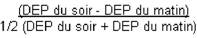

RÉSUMÉ DES CARACTÉRISTIQUES DU PRODUIT
ANSM - Mis à jour le : 18/10/2010
LOMUDAL, solution pour nébulisation
2. COMPOSITION QUALITATIVE ET QUANTITATIVE
Cromoglicate de sodium ..................................................................................................................... 20 mg
Pour une ampoule de 2 ml.
Pour la liste complète des excipients, voir rubrique 6.1.
Solution pour inhalation par nébuliseur.
4.1. Indications thérapeutiques
· Traitement continu anti-inflammatoire de l'asthme persistant léger*.
*L'asthme persistant léger se définit par l'existence de symptômes diurnes plus de 1 fois par semaine et moins de 1 fois par jour et/ou de symptômes nocturnes plus de 2 fois par mois, un DEP ou un VEMS supérieur à 80 % des valeurs prédites, une variabilité du DEP comprise entre 20 et 30 %.
La variabilité du DEP s'évalue sur la journée ou sur une semaine.
· Prévention de l'asthme d'effort.
4.2. Posologie et mode d'administration
Posologie
La posologie habituelle est de 4 ampoules par jour réparties en 4 séances d'aérosolthérapie par jour.
En cas de déstabilisation de l'asthme, ou de contrôle insuffisant des symptômes, un traitement par corticoïde inhalé doit être rapidement envisagé.
Une dose unitaire entamée doit être utilisée dans les 12 heures.
Mode d'administration
Cette solution de cromoglycate doit être administrée par voie inhalée à l'aide d'un appareil pour nébulisation (nébuliseur).
NE PAS INJECTER- NE PAS AVALER
Se conformer au mode d'emploi de l'appareil utilisé.
Un volume de remplissage de 2 à 4 ml convient pour la plupart des nébuliseurs. La suspension de Lomudal est prête à l'emploi. Si une dilution est nécessaire elle se fera dans du sérum physiologique stérile.
Le mélange obtenu est pulsé par un débit d'air ou d'oxygène (6 à 8 litres/minutes) pendant environ 10 à 15 minutes durant lesquelles le patient respire à son rythme habituel.
La technique d'utilisation par le patient doit être vérifiée régulièrement.
Après inhalation, la solution inutilisée restant dans la cuve de l'appareil doit être jetée.
Allergie à l'un des constituants.
4.4. Mises en garde spéciales et précautions d'emploi
Mises en garde spéciales
Prévenir le patient que ce médicament n'est pas destiné à juguler une crise d'asthme déclarée, mais est un traitement continu de fond de la maladie asthmatique devant être poursuivi régulièrement, quotidiennement et aux doses prescrites, et dont les effets sur les symptômes de l'asthme ne se feront sentir qu'au bout de plusieurs jours.
Si en dépit d'un traitement bien conduit une dyspnée paroxystique survient, on doit avoir recours à un bronchodilatateur bêta2 mimétique par voie inhalée d'action rapide et de courte durée pour traiter les symptômes aigus. Il conviendra d'en informer le patient et de lui préciser qu'une consultation médicale immédiate est nécessaire si, dans ce cas, le soulagement habituellement obtenu n'est pas rapidement observé après inhalation du bronchodilatateur bêta2 mimétique.
Si un patient développe en quelques jours une augmentation rapide de sa consommation en bronchodilatateurs bêta2 mimétiques d'action rapide et de courte durée par voie inhalée, on doit craindre (surtout si les valeurs du débit-mètre de pointe s'abaissent et/ou deviennent irrégulières) une décompensation de sa maladie et la possibilité d'une évolution vers un asthme aigu grave (état de mal asthmatique). Le médecin devra également prévenir le patient de la nécessité dans ce cas, d'une consultation immédiate. La conduite thérapeutique devra alors être réévaluée, un traitement par corticoïde inhalé doit être rapidement envisagé.
Précautions d'emploi
En cas d'infection bronchique ou de bronchorrhée abondante, un traitement approprié est nécessaire afin de favoriser la diffusion optimale du produit dans les voies respiratoires.
4.5. Interactions avec d'autres médicaments et autres formes d'interactions
Sans objet.
Les études chez l'animal n'ont pas mis en évidence d'effet tératogène. En l'absence d'effet tératogène chez l'animal, un effet malformatif dans l'espèce humaine n'est pas attendu. En effet, à ce jour, les substances responsables de malformations dans l'espèce humaine se sont révélées tératogènes chez l'animal au cours d'études bien conduites sur 2 espèces.
En clinique, aucun effet malformatif ou fœtotoxique particulier n'est apparu à ce jour.
Toutefois, le suivi de grossesses exposées au cromoglycate est insuffisant pour exclure tout risque.
En conséquence, l'utilisation du cromoglycate ne doit être envisagée au cours de la grossesse que si nécessaire.
Il n'y a pas de données disponibles sur le passage du cromoglycate dans le lait maternel.
Toutefois, en raison d'un résorption très partielle au niveau de la muqueuse respiratoire, d'une part, et d'une absorption digestive négligeable, d'autre part, et compte tenu de l'absence de toxicité, l'allaitement est possible en cas de traitement par ce médicament.
4.7. Effets sur l'aptitude à conduire des véhicules et à utiliser des machines
LOMUDAL, solution pour nébulisation n'a aucun effet sur l'aptitude à conduire des véhicules et à utiliser des machines.
Possibilité de survenue de réactions allergiques à type d'éruption cutanée ou de prurit.
Rarement ont été rapportés des cas de dysurie isolée.
A long terme ont été signalés des cas d'infiltrats pulmonaires associés à une hyperéosinophilie pouvant être également attribués à la maladie asthmatique elle même.
L'emploi de ce médicament à des doses très supérieures aux doses recommandées est le reflet d'une aggravation de l'affection respiratoire nécessitant une consultation rapide pour réévaluation thérapeutique.
5. PROPRIETES PHARMACOLOGIQUES
5.1. Propriétés pharmacodynamiques
Le cromoglycate de sodium par voie inhalée exerce une action locale au niveau de la muqueuse bronchique. Son mécanisme d'action reste mal élucidé. Il est classiquement décrit comme un inhibiteur de la dégranulation du mastocyte, prévenant la libération des médiateurs chimiques de l'anaphylaxie. Il n'a pas d'effet direct vis-à-vis de ces médiateurs, au niveau de leurs récepteurs.
5.2. Propriétés pharmacocinétiques
Après inhalation, le produit n'est pratiquement pas résorbé. Il est principalement éliminé par l'appareil mucociliaire puis dégluti. Une faible partie de la dose initiale est retrouvée dans les urines, la majeure partie étant éliminée par les fécès (dont la moitié dans les 5 premières heures).
Cette fraction provient non seulement de la déglutition mais aussi de l'élimination biliaire. Par voie orale, l'absorption est lente et très limitée (0,5 %).
5.3. Données de sécurité préclinique
Non renseignée.
Sans objet.
3 ans.
6.4. Précautions particulières de conservation
Conserver à l'abri de la lumière et à température inférieure à 30°C.
6.5. Nature et contenu de l'emballage extérieur
2 ml en ampoule. Boîte de 24 ou 48 ampoules.
6.6. Précautions particulières d’élimination et de manipulation
Pas d'exigences particulières.
7. TITULAIRE DE L’AUTORISATION DE MISE SUR LE MARCHE
SANOFI-AVENTIS FRANCE
1-13, BOULEVARD ROMAIN ROLLAND
75014 PARIS
8. NUMERO(S) D’AUTORISATION DE MISE SUR LE MARCHE
· 324 118-7: 2 ml en ampoule. Boîte de 24 ampoules.
· 324 119-3: 2 ml en ampoule. Boîte de 48 ampoules.
9. DATE DE PREMIERE AUTORISATION/DE RENOUVELLEMENT DE L’AUTORISATION
[à compléter par le titulaire]
10. DATE DE MISE A JOUR DU TEXTE
[à compléter par le titulaire]
Sans objet.
12. INSTRUCTIONS POUR LA PREPARATION DES RADIOPHARMACEUTIQUES
Sans objet.
Liste II.